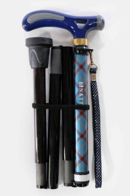
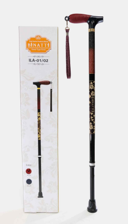
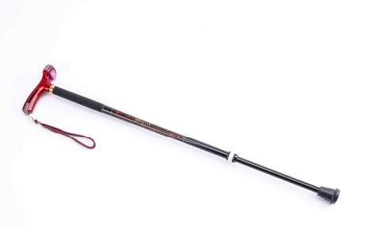
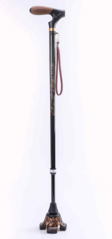
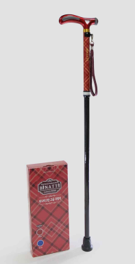
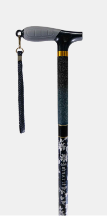

고령자와 보행약자의 안전하고 자유로운 이동을 위해. 경량 카본 소재와 프리미엄 디자인을 결합한 BINATTI 지팡이 5종 라인업. 고령친화우수제품 · 노인장기요양보험 복지용구 급여제품 등록.
Brand
BINATTI (비나띠)
Category
고령친화 보행보조기기
Booth
Booth KP-04 · Korea Pavilion, Makuhari Messe
Date
2026. 10. 7 – 10. 9
01 · Company
회사 소개
About AION · Premium Silver-Care Solutions
Company Overview
◆ Safe · Light · Beautiful Walking
고령자의 자립적인 이동과
안전한 일상을 지원합니다.
아이온(AION)은 고령화가 가속화되는 시대, 고령자와 보행약자의 안전하고 편리한 이동을 지원하기 위해 프리미엄 보행보조기기 브랜드 BINATTI(비나띠)를 전개합니다. 사용자의 신체조건과 사용환경에 맞춰 접이식·일자형·LED 라이트·스탠드·원목 등 5개 라인업을 구축하고, 경량 카본 소재와 디자인 감각을 결합한 프리미엄 지팡이로 일본 고령친화 시장에 진출합니다.

Company
아이온AION Co., Ltd.
CEO · 대표
유성용Yoo Sung-Yong
Business
고령친화 보행보조기기Premium Walking Canes · Silver Care
Brand
BINATTI · 비나띠5-Line Cane Collection
Certification
고령친화우수제품 인증노인장기요양보험 복지용구 등록
Contact
Booth KP-04Korea Pavilion · Makuhari Messe
BINATTI의 핵심 가치 Key Values · Safe · Light · Beautiful
260g
최경량 · 카본 샤프트Ultra-Light Carbon
5+
라인업 (사용환경별)Lineup Variety
10단계
높이 조절 · 이중 잠금Height Adjustable
Medical Japan 2026 · Export Consultation
02 / 10 · About AION
02 · Lineup
BINATTI 라인업 개요
5-Line Premium Cane Collection
Product Lineup
BINATTI(비나띠)는 사용자의 신체조건·사용환경별로 최적화된 5개 지팡이 라인업을 보유합니다. 공통으로 경량 카본 샤프트 · 이중 잠금 높이 조절 · 인체공학적 손잡이 · 미끄럼 방지 고무발 · 야간 축광·반사 안전 요소를 갖추면서, 각 제품마다 뚜렷한 차별화 포인트를 제공합니다.
SF · FEATURE · 3단 접이식
Folding Cane
300g · 접이시 29cm 대중교통·여행 최적

ILA · 일자형
Straight Cane
280g · 10단 조절 일상 안정 보행

LC · LED 라이트
Light Cane
260g · 손잡이 LED 야간 안전 강화

BS · 자립 스탠드
Standing Cane
350g · 360° 회전 자립 · 넓은 접지
BW · 천연 원목
Wood Cane
260g · 원목 손잡이 프리미엄 감성
COMMON
전 제품 공통
▸ 경량 카본 샤프트
▸ 이중 잠금 구조
▸ 인체공학 손잡이
▸ 미끄럼 방지 고무발
▸ 축광·반사 안전 요소
📌 이후 페이지 (04–08)에서는 각 제품의 상세 사양·기능·색상 옵션을 제품당 한 페이지로 소개합니다.
Medical Japan 2026 · Export Consultation
03 / 10 · BINATTI Lineup
Product 01 · Featured
BINATTI Folding Cane · SF
비나띠 접이식 지팡이 · 3단 접이식 · 휴대 최적화
Feature Folding
SF-01 Blue

SF-02 Red
◆ Flagship · 3단 접이식
Folding Cane
비나띠 접이식 지팡이
3단 접이식 구조로 접었을 때 29cm. 대중교통·여행·차량 탑승 시 보관과 휴대가 편리합니다. 경량 카본 샤프트로 300g 초경량, 필요할 때 간편하게 펼쳐 사용 가능한 프리미엄 접이식 지팡이.
300g
중량 (±10g)
29cm
보관 시 길이
84–94
사용 길이 (cm)
5단
높이 조절
주요 기능 · Key Features
3단 접이식 구조: 접었을 때 29cm 초소형
경량 카본 샤프트: 300g으로 부담 최소화
5단계 높이 조절: 신장·자세에 맞춤
이중 잠금 구조: 흔들림·풀림 방지
축광·반사 안전 요소: 야간 저조도 식별
인체공학적 손잡이: 장시간 편안한 그립
적합 사용 · Best For
대중교통·차량 탑승 시 휴대
여행·외출 시 보관 편리
필요할 때만 펼쳐 사용하는 간헐 사용자
휴대성 우선 고령 사용자
디자인 감성을 중시하는 액티브 시니어
Model
SF-01 (Blue) · SF-02 (Red)
Weight
300 ±10 g
Length
84–94 cm · 접기 29cm
Material
카본 · 합성수지 · 합성고무
Adjust
5단계 · 이중 잠금
Color
Blue · Red
ISO 9001고령친화우수제품 인증노인장기요양보험 복지용구 등록 (지팡이)🇯🇵 일본 수출 진행 중
Medical Japan 2026 · Export Consultation
04 / 10 · Folding Cane (SF)
Product 02 · Standard
BINATTI Straight Cane · ILA
비나띠 일자형 지팡이 · 일상 안정 보행
Straight Standard

ILA-01 Dark Grey
ILA-02 Wine
◆ Standard · 일자형 · 일상 보행
Straight Cane
비나띠 일자형 지팡이 (ILA)
일자형 샤프트 구조로 반복적인 일상 보행 시 안정적인 지지 제공. 10단계 높이 조절로 사용자의 신장에 세밀히 맞춤 가능한 표준형. 경량 카본 280g으로 장시간 사용 시에도 부담 최소.
280g
중량 (±10g)
62cm
보관 시 길이
71–95
사용 길이 (cm)
10단
높이 조절
주요 기능 · Key Features
일자형 샤프트: 단순·견고한 구조
경량 카본: 280g으로 초경량
10단계 높이 조절: 세밀한 신장 매칭
이중 잠금 구조: 안정적 고정
축광·반사 안전 요소: 야간 식별성
미끄럼 방지 고무발: 실내·외 안전
적합 사용 · Best For
일상 보행이 잦은 상시 사용자
안정적인 실내·외 보행 원하는 고령자
보조 지팡이가 처음인 사용자
재활 후 회복기 안정 보행
다크 그레이·와인 컬러의 차분한 무드 선호
Model
ILA-01 (Dark Grey) · ILA-02 (Wine)
Weight
280 ±10 g
Length
71–95 cm · 보관 62cm
Material
카본 · 합성수지 · 합성고무
Adjust
10단계 · 이중 잠금
Color
Dark Grey · Wine
ISO 9001고령친화우수제품 인증노인장기요양보험 복지용구 등록 (지팡이)🇯🇵 일본 수출 진행 중
Medical Japan 2026 · Export Consultation
05 / 10 · Straight Cane (ILA)
Product 03 · Innovative
BINATTI Light Cane · LC
비나띠 라이트 지팡이 · LED 야간 안전 강화
LED Innovation
◆ Innovative · LED 라이트
Light Cane
비나띠 라이트 지팡이 (LC)
손잡이 전면부 LED 라이트로 야간·저조도 환경에서 전방 시야 확보. 보행 지지 + 조명을 하나의 제품에 결합해 손전등 없이도 안전한 야간 보행을 지원하는 혁신 제품. 260g 초경량.
260g
중량 (±10g)
LED
손잡이 라이트
71–95
사용 길이 (cm)
10단
높이 조절
주요 기능 · Key Features
LED 라이트: 손잡이 전면부 야간 조명
전방 시야 확보: 노면·장애물 인식
보행+조명 통합: 손전등 별도 불필요
10단계 높이 조절: 이중 잠금 구조
축광·반사 요소: 이중 안전 강화
260g 초경량 카본 샤프트
추천 사용 환경 · Use Cases
야간 산책·외출 시 안전 보행
조명이 부족한 복도·주차장
새벽·저녁 출퇴근 시니어
시력이 저하된 고령자
야간 활동이 잦은 액티브 시니어
Model
LC-02 (Wine)
Weight
260 ±10 g
Length
71–95 cm · 보관 62cm
Feature
손잡이 LED 라이트
Adjust
10단계 · 이중 잠금
Material
카본 · 합성수지 · 합성고무
ISO 9001고령친화우수제품 인증노인장기요양보험 복지용구 등록 (지팡이)🇯🇵 일본 수출 진행 중 · 야간 안전 특화
Medical Japan 2026 · Export Consultation
06 / 10 · Light Cane (LC)
손잡이에 천연 원목, 샤프트에 경량 카본을 결합한 프리미엄 라인. 원목 고유의 자연스러운 질감과 색감으로 일반 보행보조기기와 차별화된 심미성 확보. 260g 초경량으로 일상 사용도 부담 없음.
260g
중량 (±10g)
Wood
천연 원목 손잡이
73–97
사용 길이 (cm)
10단
높이 조절
주요 기능 · Key Features
천연 원목 손잡이: 자연스러운 촉감·색감
경량 카본 샤프트: 소재별 장점 결합
10단계 높이 조절: 이중 잠금 구조
인체공학 손잡이: 원목 형태 편안함
미끄럼 방지 고무발: 실내·외 안정
정밀 설계 연결부·버튼: 흔들림·소음 최소
추천 사용 · Best For
디자인·소재를 중시하는 프리미엄 시니어
격조 있는 외출·모임 자리
기능뿐 아니라 심미성을 원하는 사용자
선물용·기념일 (부모님 · 조부모님)
일본 프리미엄 고령친화 시장 타겟
Model
BW (Brown)
Weight
260 ±10 g
Length
73–97 cm · 보관 63cm
Handle
천연 원목 (Wood)
Shaft
경량 카본
Adjust
10단계 · 이중 잠금
ISO 9001고령친화우수제품 인증노인장기요양보험 복지용구 등록 (지팡이)접이식 폴대 특허🇯🇵 일본 프리미엄 시장 진출 예정
Medical Japan 2026 · Export Consultation
08 / 10 · Wood Cane (BW)
03 · Compliance & IP
인증 · 지식재산권 · 시장성
Certifications, IP & Market Positioning
Quality & Market
인증 및 지식재산권 Certifications & IP
구분 · Category
인증 · Certification
비고 · Notes
품질 인증
ISO 9001 품질경영시스템
전 제품 공통
고령친화
고령친화우수제품 인증
국가 지정
보험 급여
노인장기요양보험 복지용구 급여제품 등록 (지팡이)
국민건강보험공단
특허
접이식 폴대 특허 및 지팡이 관련 지식재산권
보유
시험성적
공인인증기관 제품 시험성적서
각 제품별 보유
시장성 · 사업화 준비 Market Readiness
일본 시장 진출 근거
일본 고령화율 세계 1위: 29%+ 초고령사회
고령친화·복지용구 시장 지속 성장
휴대성·안정성·디자인 등 다양한 수요
5개 라인업으로 다층 채널 대응
이미 일본 수출 실적 보유 (2025-2026)
사업화 준비 현황
국내 노인장기요양보험 등록 완료
영문 카탈로그 및 제품 소개자료 구축
제품 품질관리·시험·인증 완료
지식재산권 확보 (특허·디자인)
Medical Japan 통해 일본 파트너 발굴
기대 성과 · 정량 목표 Expected Outcomes
50억
2026 국내 예상 매출Domestic Revenue Target
3억
해외 수출 목표Export Target
2+
일본 신규 거래처New Japan Partners
Medical Japan 2026 · Export Consultation
09 / 10 · Certifications & Market
04 · Contact
상담 문의 · 방문
Contact & On-site Consultation
Get in Touch
아이온(AION)은 Medical Japan Tokyo 2026 연계 수출상담회 기간 중 Korea Pavilion Booth KP-04에서 해외 바이어 대상 1:1 상담을 진행합니다. 일본 시장은 이미 수출 실적을 보유하고 있으며, 복지용구 유통업체 · 의료 헬스케어 유통사 · 수입 판매 업체 등 다층 채널의 신규 거래처 발굴을 목표로 합니다.
주요 관심 시장 · 일본 (복지용구 · 고령친화)상담 매칭 · 5개 라인업 전 제품통역 지원 · 한 · 영 · 일고령친화우수제품 · 복지용구 등록 완료
지원받은 후 계획 Post-event Plan
Step 1
일본 주력 제품군 발굴
바이어별 선호도 파악 → 접이식·스탠드·원목 등 일본 시장 적합 라인업 선정
Step 2
현지 유통 파트너 확보
복지용구·의료·헬스케어 분야 바이어 → 샘플·견적·거래조건 협의
Step 3
수출계약 · 지속 매출 창출
초도 수출 → 제품군 단위 지속 수출구조 구축
Step 4
현지 수요 반영 제품 고도화
일본 소비자 선호 디자인·기능 → 기존 제품 개선 및 신규 개발 반영
Step 5
글로벌 판로 확대
일본 레퍼런스 → 타 국가 시장 진출 확대
아이온 · Consultation Desk
Company아이온 · AION Co., Ltd.
CEO유성용 · Yoo Sung-Yong
BrandBINATTI (비나띠) · 5-Line Cane Collection
BoothKP-04 · Korea Pavilion, Makuhari Messe
Date2026. 10. 7 – 10. 9 (JST)
Category고령친화 보행보조기기 · Premium Silver Care
본 브로셔의 사양·인증·수치는 발행 시점의 자료를 기준으로 하며 사전 통보 없이 변경될 수 있습니다. 사전 상담 신청 및 통합 안내는
Medical Japan 2026 사전등록 페이지에서 가능합니다.
Medical Japan 2026 · Export Consultation
10 / 10 · Contact